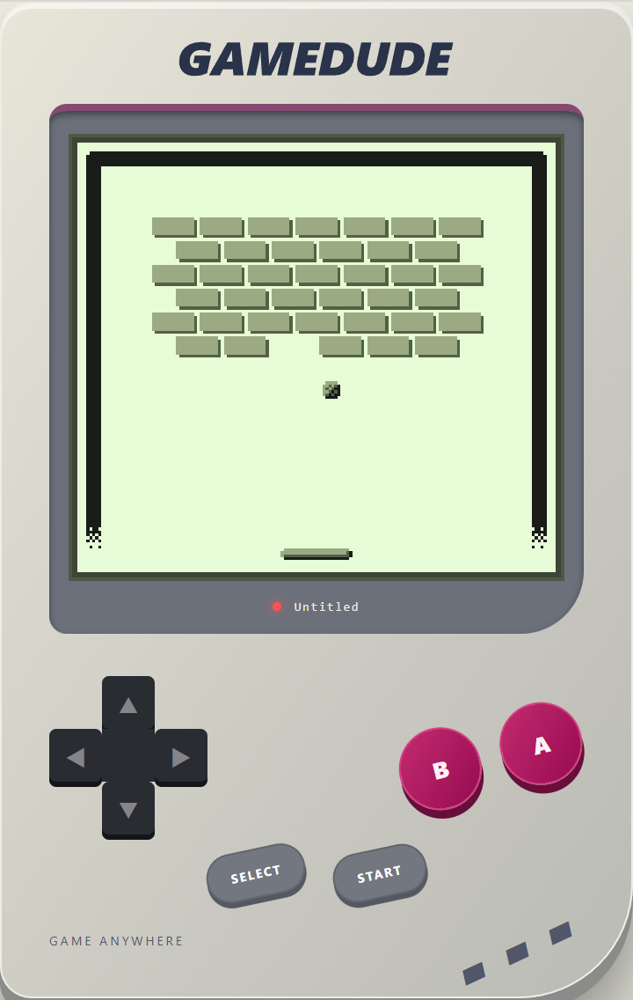
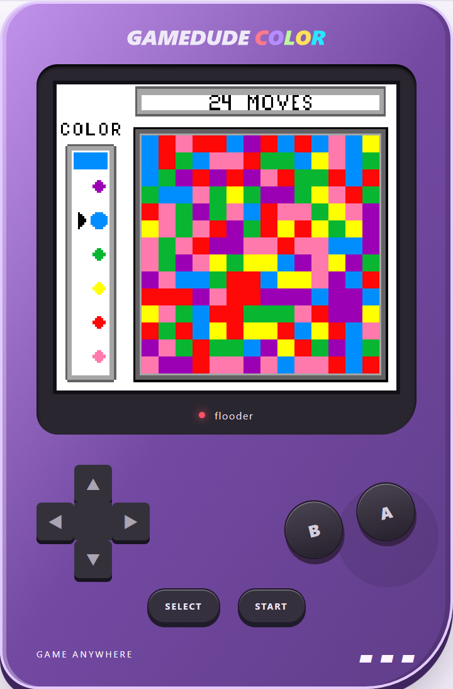

01 / THE SOUND EXPLORERPUBLIC BETA
Felucca SMK
v1.6.1 · SMK build 930
Go deep into synthesis. Shape a sound, find a new favorite, and turn a small keyboard into a much bigger instrument.
Same keyboard. A whole new personality.
Custom firmware and browser playgrounds
for SMK-37 Pro, Elite & FM-1.

01 / PICK YOUR PERSONALITY
Follow your curiosity. Each project has its own
sound, workflow, and place to explore.
v1.6.1 · SMK build 930
Go deep into synthesis. Shape a sound, find a new favorite, and turn a small keyboard into a much bigger instrument.
SMK 2.8.0-b3
Start with a beat. Layer synths, build patterns, and keep the ideas moving with a performance-minded groovebox.
SMK 1.1.0-b1-dc9
Explore Prophet, FM6, CZ-1, SID and drums on your SMK, in the native browser Studio or simulator. Experimental hardware beta.
v0.9 · SMK build 24 · FM-1 build 26
Play nine original Doom levels with weapons, music and a classic HUD. SMK build 24 adds illuminated drum-pad controls, press-to-dark feedback and Fader 2 brightness. FM-1 build 26 adds GameDude-style illuminated controls and more responsive input scanning. The installer also restores original firmware; the SMK Pro round trip is verified.

v2.0 · SMK 953 · FM-1 939
Turn your FM-1, SMK-37 Pro or Elite into a pocket arcade. Install once, then build your Game Boy library over Bluetooth or USB. Pick a saved game and play.

v2.0 · SMK 985 · FM-1 983
The pocket arcade, in full color. Play Game Boy Color games on FM-1, SMK-37 Pro or Elite, with Bluetooth and USB uploads, multiple saved games and a browser player.

v2.0 · SMK 971 · FM-1 969
Drop in a NES ROM or ZIP, or try the included homebrew games. Play in your browser and build and flash FM-1 firmware over USB. SMK37 simulators and development builds are also available.
02 / NO KEYBOARD? NO PROBLEM.
Meet the hardware in a browser simulator,
or spread out in a full-size Studio.
No firmware installation needed to try them.
Breakout / HOMEBREW IN ACTION
v2.0 · SMK 953 · FM-1 939
Classic green. Familiar controls. Try the included Breakout homebrew, then choose FM-1, Pro, Elite or handheld controls in the player.
Play in browser ↗
Flooder / HOMEBREW IN ACTION
v2.0 · SMK 985 · FM-1 983
Atomic Purple, full-color play. Try Flooder, the included color puzzle game, with the same FM-1, Pro, Elite and handheld controls.
Play in browser ↗
Browser audio starts after interaction. Chrome or Edge is recommended for USB MIDI and the web installers.
03 / THE WORKBENCH IS OPEN
SMK Lab brings independent firmware projects and their browser tools together. Built by people who keep asking, “What else can this thing do?”
Have a firmware project, editor, simulator, or useful SMK resource? Send it over. Every listing is reviewed before it joins the collection.
The linked projects are custom beta firmware. Read the selected project's compatibility notes, backup instructions, and release information before installing. Use that project's installer for its supported hardware. Browser simulators can be explored without changing your device.
Fill out the submission form, then post the prepared request on GitHub. The review queue lives in the SMK Lab repository. A GitHub account is required. Requests are public, so do not include private information. Submission does not automatically publish a listing; Chance reviews the site before adding it.